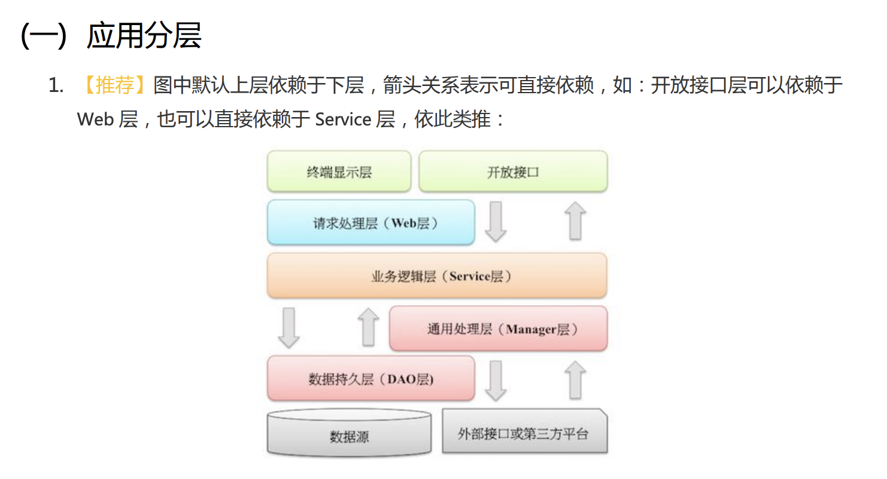
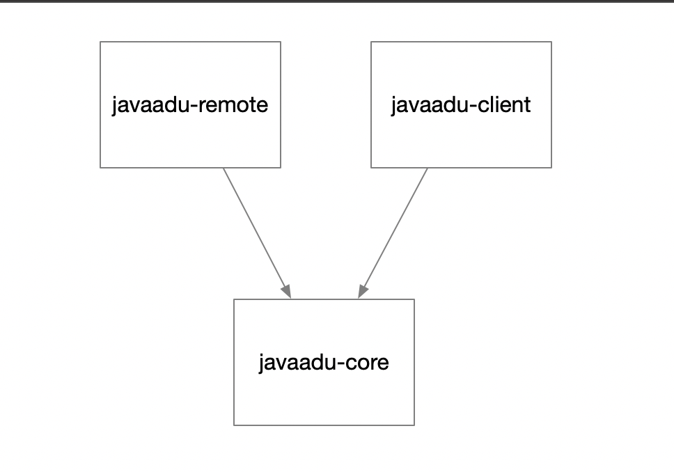

今天我们谈谈SOFA模块化，首先看一段SOFA的介绍：
SOFABoot是蚂蚁金服开源的基于Spring Boot的研发框架，它在Spring Boot的基础上，提供了诸如 Readiness Check，类隔离，日志空间隔离等能力。在增强了Spring Boot的同时，SOFABoot提供了让用户可以在Spring Boot中非常方便地使用SOFA中间件的能力。
在接触SOFA的模块化概念之前，我对服务端开发的模块化认知停留在“模块化”这个层面，我通常会按照下图所示的结构组织自己负责的应用的代码。

在Spring体系中的模块（Module），就是通过不同的Spring上下文来管理各自模块中的bean，在开发和编译期实现模块化，但是在运行时整个应用还是在一个Spring上下文中，这些代码还都是被一个类加载器加载的。
在图1中，我在manager模块中定义的bean，在service中可以随时引用，而不需要关注这个引用是否合理；这样的开发模式在应用还小的时候没什么问题，不过，随着业务的发展和应用的升级，这些模块之间的引用关系会越来越复杂而无法管理(这时候应用也就成为了一个“大泥球”)，当某一天需要对应用进行服务化拆分的时候，就需要花很大的精力去理清不同模块之间的耦合和引用关系。SOFA的模块化特性就是为了解决这个问题而出现的，这种特性可以强制开发者在增加两个模块之间的引用关系的时候进行仔细的设计和思考。
SOFA的模块，是一种可运行的模块；普通的Spring项目中的模块，则是普通的Jar。一个完整的 SOFA模块和一个普通的Jar包有两点区别:
sofa-module.properties文件，这份文件里面定义了SOFA模块的名称以及模块之间的依赖关系。META-INF/spring目录下，可以放置任意多的Spring配置文件，SOFA会自动把它们作为本模块的Spring配置加载起来。使用SOFA模块化特性后，两个模块之间的bean无法直接通信，需要使用SOFA的通信协议进行通信，SOFA支持两种通信协议：
SOFA为开发人员提供了三种形式的发布和引用服务的方式：xml方式、注解方式、编程方式。我现在用的比较多的还是xml方式，原因在于SofaService和SofaReference都是只支持jvm服务的发布和引用，而xml方式则可以支持两种形式的调用。
SOFA提供的模块化解决方案，既实现了真正的、运行时的模块化，又没有过度引入OSGI的复杂度，是一种有效的折衷方案。接触SOFA到熟悉SOFA的过程对我的开发思路影响很大，但是在熟悉了SOFA的模块化思想之后，我发现这个特性对于我平常的开发工作有几个好处。
为了降低服务端的压力，我们需要提供一个SDK供业务方使用，在之前Spring体系下，这种架构也是可以执行的，但是有个弊端——SDK中应用的类和JAR包对于业务方的应用来说也是可见的，在某些情况下会出现冲突或引入潜在的BUG。
使用SOFA的模块化特性，我们提供的近端包虽然还是跟业务方的应用共享一个JVM，但是在类加载器层面实现了隔离，对于业务方来说，他们只需要知道是使用了我们的哪些接口，而不需要关注我们这个SDK引入了多少三方JAR包。
利用SOFA模块化，要实现代码共享，可没有Spring体系下那么简单——直接引用给一个模块就可以。在SOFA中，要进行代码共享，通常有两种情况：（1）近远端代码共享（2）管理时和运行时代码共享。
以第（1）种情况为例，某个组件近远端都是一样的，为了避免代码重复，我们如何实现代码共享呢？我现在的做法是：在一个公共的test-core模块中定义需要共享的接口和实现类；这个test-core模块不能定义为SOFA的模块，只能定义为一个普通的JAR包；然后在需要使用该接口的SOFA模块（近端模块和远端模块）中，分别声明和引用那个共享的bean，示例图如下所示。

这里的重点在于：
本文主要介绍了SOFA开发框架与Spring体系区别最明显的一个特性：SOFA模块化，通过每个模块一个Spring上下文的形式，实现了真正的运行时隔离。
基于我个人的使用经验，SOFA模块化对服务端开发的影响优大于劣：在维护代码中的过程中会仔细斟酌当前应用的模块依赖结构是否合理；可以更安全得提供SDK给业务方使用；在实现代码共享的时候，也需要仔细考虑哪些代码值得共享，哪些不需要。